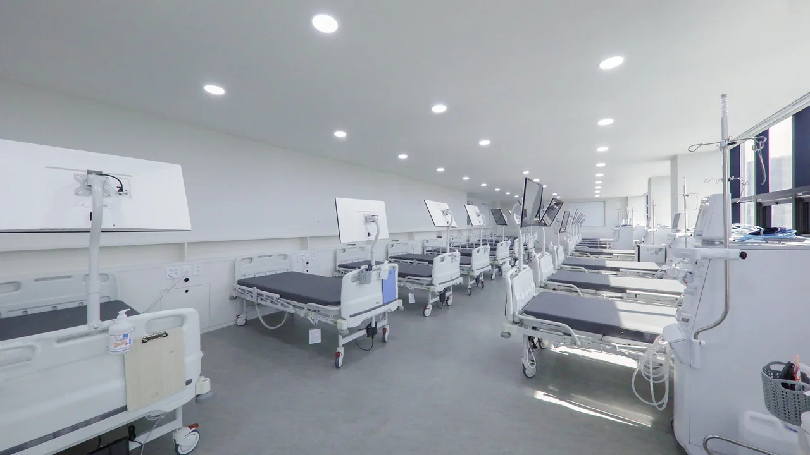

Өвчтөн, ар гэрийнхэнд зориулсан мэдээлэл
Мёнмок дахь дотрын үзлэг ба гемодиализ
Сөүлийн Жүннан дүүрэгт дотрын эмчид үзүүлэх эсвэл бөөрний диализын талаар зөвлөгөө авах гэж байна уу? Myeonmok Yonsei Seok (면목연세석내과) эмнэлэг метроны Мёнмок өртөөний ойролцоо байрладаг.

Дотрын эмчид үзүүлэх бол
Чихрийн шижин, цусны даралт ихсэлт, холестерины өөрчлөлтийн талаар зөвлөгөө авах болон өмнөх эмчилгээгээ үргэлжлүүлэхэд дотрын амбулаторид хандана. Үзүүлэх болсон шалтгаанаа хэлээд ямар шинжилгээний хариу авчрахыг асуугаарай.
Гемодиализын талаар лавлах бол
Бөөрний өвчний анхны үзлэг, өөр эмнэлгээс диализ шилжүүлэх хүсэлт хоёрын бэлтгэл өөр. Утасдахдаа аль нь танд хамаарахыг хэлж, боломжтой өдөр, цаг болон очих давхраа лавлаарай.
Эмнэлгийг олох
Naver газрын зурагт эмнэлгийн солонгос нэр 면목연세석내과 эсвэл 서울 중랑구 면목로 398 гэсэн хаягийг оруулаарай. Нэг барилгад амбулатори, диализын тасаг өөр өөр давхарт байрладаг.